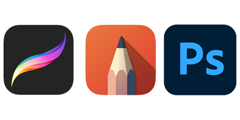

Hello! You can call me “Cath”, and “Kitty” if we’re friends. There’s not too much you need to know about me. I’m just a small-time artist doing this fun. Although this is mostly a hobby, I’m still incredibly passionate about my art. I put a lot of work into what I draw, and I hope you can see that too.
"Blue"
“Blue” and “Elephants Rule the World” are two pieces that I drew for a project in High School. My art teacher called the project “Join the Cannon of Art” and the point was to give students the ability to find their own art styles. I think that this project actually did help me start to discover my art style. These two pieces were not only my first major dive into the world of digital art, but also the start of my cartoon-like art style. Since digital art was new to me, I wanted to start simple, but, as my art has evolved, I’ve grown attached to the simplistic style (with a few changes of course).
In general, most of my drawings are of a single subject with no background. This allows me to focus my attention on the subject, which leads to consistency in my cartoon-like style. I am, however, beginning to branch out more with the types of things I draw. I definitely agree with the fact that practice is the only way to improve. Therefore, I know that if I want to strengthen all of skills in art I need to draw as much as possible as well as try new things. As a perfectionist, this has the potential to hurt my pride, when new things don’t turn out. I still have to work on not getting disheartened by mistakes, but mistakes will eventually lead to growth.
"Elephants Rule the World"
My Tools:
-Microsoft Surface Go (2018)
-Surface Pen
-Autodesk Sketchbook Application
-Determination & Inspiration (optional, but helpful)
While I do dabble in drawing on paper, most of the time I like digital art. So, above is my list of tools for digital art. Like I mentioned determination and inspiration are optional, but I’ve found it’s hard to get very far without them.
Let’s talk about hardware. Many digital artists today use a tablet & tablet pen combo. This allows for minimal lag as well as the ability to draw directly into whichever application you are using. I currently see many people using various models of Microsoft’s Surface and Apple’s iPad. This just comes down to your choice of operating system. However, cost can also play a major role. In my case I prefer the IOS macOS of Apple products, but on average a Surface is a few hundred dollars less than an iPad. There was a learning curve, but I ended up really enjoying the Surface. I highly recommend doing your own research if you are in the market for a tablet you can draw on.
A third option for hardware, is a Wacom drawing tablet. Wacom makes a variety of drawing tablets ranging from ones with their own screens, which are quite pricey, to ones you can just plug into your computer, which are pretty inexpensive. I worked with one that plugs right into a computer for a while before getting a Surface. It was useful but now that I’ve used an actual tablet I wouldn’t go back. I will say, however, that some of the Wacom tablets with their own screens are actually used by professionals in fields such as animation. So, I would hazard a guess that the more expensive ones are more useful than the inexpensive ones.

Now, let’s talk about software. What available drawing software there is out there, can affect your choice in hardware. Currently (December 2020), the industry standard and highest rated drawing software is Procreate by Apple, available only on iPad and designed for use with the Apple Pencil. Since I decided to go with the Microsoft Surface, I obviously can’t use Procreate. My go-to is Autodesk Sketchbook. I will warn you that Sketchbook is known for a variety of bugs, but they’re easy enough to navigate around. There are a few other drawing apps for the Surface, but Sketchbook is free and easy to use. On top of that, I haven’t found that there are many functions that Sketchbook does not have.
Lastly, there’s Adobe’s Photoshop. Photoshop is a powerful application and has decent art features. However, Photoshop is missing one key drawing tool when compared to Sketchbook and Procreate, which is a stroke stabilizer. If you’re anything like me, your ability to draw a straight line goes downhill quick when working digitally. For this reason, a stroke stabilizer is essential. Another issue that I have had with utilizing Photoshop to draw is that it is too powerful. Photoshop tends to slow down less powerful machines such as tablets. Because the machine is slowed, many problems can occur. The most prominent of these being lag, and, since to point of utilizing a tablet to draw digitally is to minimize any lag, this makes the $20/month Adobe charges for Photoshop not worth it.